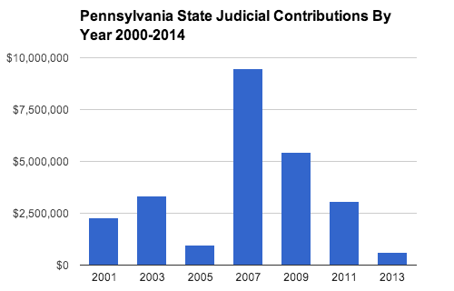

Pennsylvania
Type of judicial election: Partisan Elections at high, appellate and general jurisdiction levels
Average donation to candidates: $1,372
Ranking: 5th in overall contributions to state high court candidates since 2000 ($22.7 million)
Judicial campaign contributions since 2000: $25,119,393
Outside spending (estimated 2000-09): $1,334,711
Top 5 contribution recipients since 2000:
| Candidate | Amount reported since 2000 |
|---|---|
| Jack A. Panella | $2,706,137 |
| Joan Orie Melvin | $2,469,189 |
| Seamus McCaffery | $2,297,753 |
| Mike Krancer | $2,116,507 |
| Maureen E. Lally-Green | $1,753,726 |
Top 5 contributors since 2000:
| Contributor | Amount reported since 2000 |
|---|---|
| Philadelphia Trial Lawyers Assoc. | $2,595,800 |
| Pennsylvania Republican Party | $2,333,185 |
| Ronald A. Krancer | $600,000 |
| Pennsylvania Future Fund | $540,125 |
| Electrical Workers Local 98 | $497,120 |
Top contributing industries since 2000:
| Industry | Amount reported since 2000 |
|---|---|
| Lawyers and Lobbyists | $8,960,708 |
| Party Committees | $2,875,399 |
| Candidate Contributions | $2,236,949 |
| Uncoded | $2,190,270 |
| General Trade Unions | $1,748,357 |